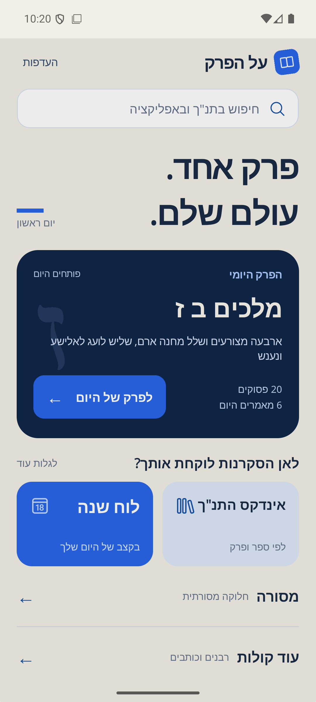
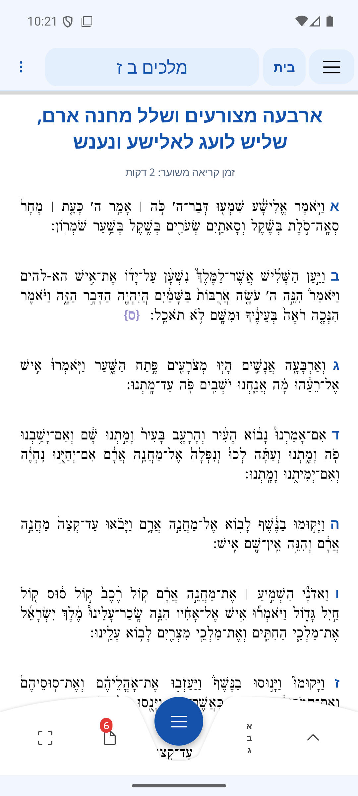
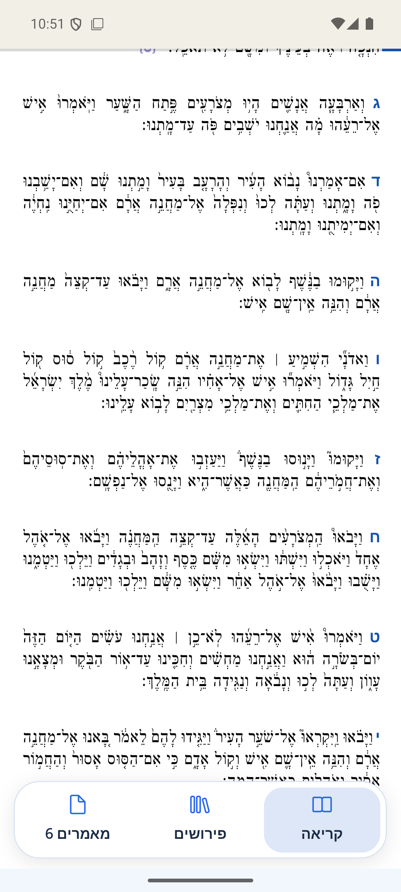
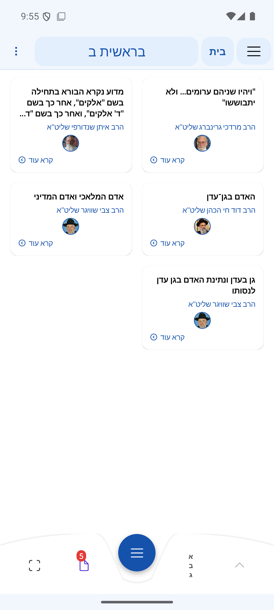
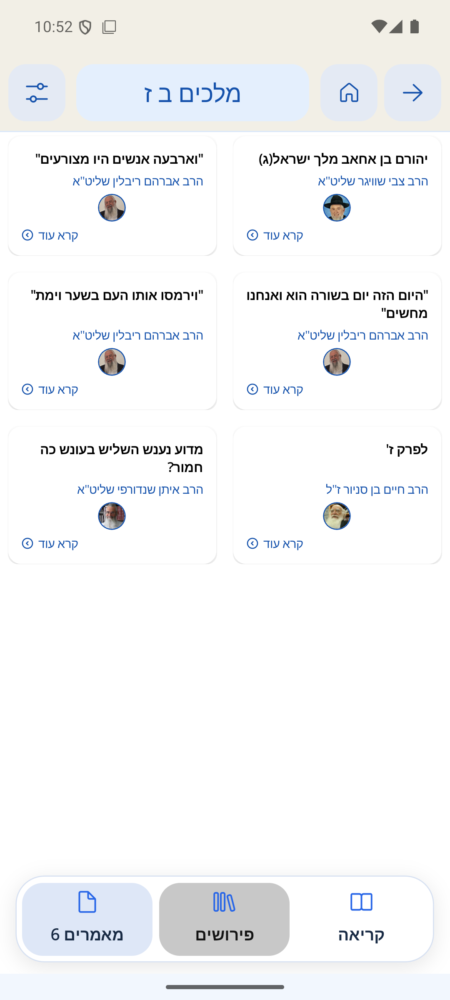
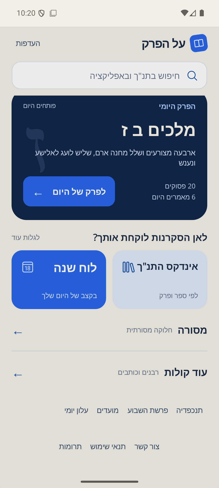
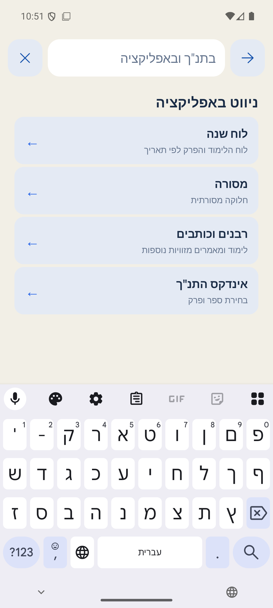
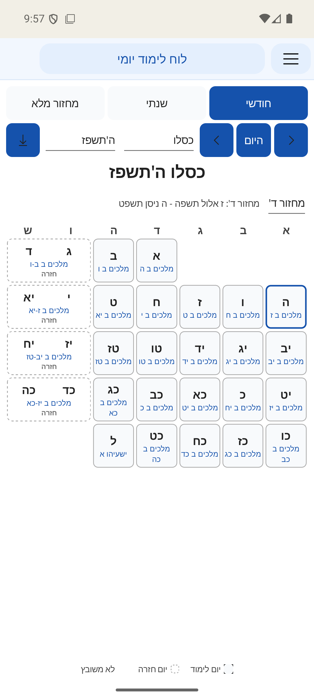
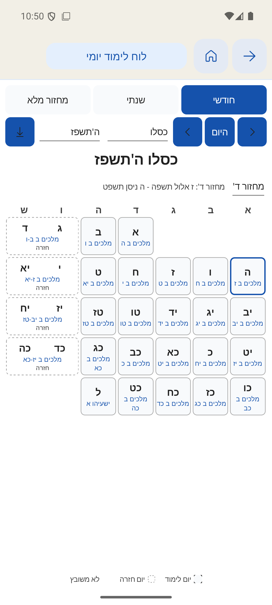
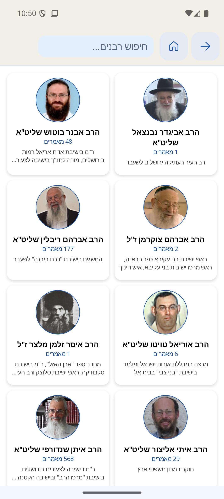

01
בית - לשמור את הכיוון, לשפר את הלחיצה
העיצוב של הבית נשמר. כפתור ההעדפות מקבל משטח ברור, אייקון ושטח לחיצה גדול; החיפוש נשאר קבוע מעל התוכן.


צילומים אמיתיים מהאפליקציה באמולטור. כל זוג מציג את המצב שהתקבל עליו משוב ואת האיטרציה שבאה אחריו. השינויים נשמרים בענף, כך שאפשר לעבור עליהם גם ב-GitHub.
העיצוב של הבית נשמר. כפתור ההעדפות מקבל משטח ברור, אייקון ושטח לחיצה גדול; החיפוש נשאר קבוע מעל התוכן.

קישורי הטקסט הקטנים בתחתית הוחלפו בכניסה אחת לספרייה. מסורה והרבנים מוצגים כשורות נוחות ללחיצה, עם תיאור מתחת לכותרת.


התפריט הצדדי והמניפה הוסרו מהסקיצה. למעלה יש חזרה, בית ובחירת פרק; למטה פס פעולות אחד: קריאה, פירושים ומאמרים.


אזור הקריאה שומר על גודל קבוע. הכותרת נעה מעליו, לפי תנועת האצבע, בלי לשנות את גודל הרשימה ובלי לקבל משוב חוזר מהפריסה.


אפשרויות הקריאה מרוכזות בגיליון רחב עם שורות וכפתורים גדולים. הגיליון כולל חיפוש, תצוגה ומסך מלא.


המעבר למאמרים שומר את מסגרת הניווט ואת פס הפעולות החדש. אפשר לחזור לקריאה בלי לפתוח תפריט נוסף.


קודם האפשרויות היו מפוזרות בתחתית הבית. כעת תנכפדיה, פרשת השבוע, מועדים ועלון יומי מקבלים עמוד עם כרטיסים גדולים. מידע ועזרה נמצאים ברמה נפרדת.


שדה החיפוש מקבל משטח ברור. כפתורי החזרה והניקוי גדולים ומובחנים, וברירת המחדל מציגה ארבעה קיצורי דרך בלבד. חיפוש עדיין מוצא גם מסכים וגם תוכן.


גם במסך קיים יש כעת חזרה ובית באותם מקומות ובאותם גדלים. תפריט הניווט הישן אינו נפתח משם.


רשימת הכותבים מקבלת את אותו ניווט חזרה ובית. אין מסלול ניווט מקביל דרך תפריט צד.


הכניסה מהבית היא כפתור גדול, ובתוך ההעדפות נשמר אותו מבנה ניווט. ההגדרות עצמן ממשיכות להשתמש במסכים האמיתיים של האפליקציה.


גלילה רציפה באמולטור, כולל שינויי כיוון ותנועה קצרה כלפי תחילת הפרק. הסרטונים הם הקלטות מסך, לא אנימציה של העיצוב.
הצילומים המלאים למעלה משמשים לביקורת על הטקסט והפריסה; הווידאו מיועד להשוואת התנועה.
| סבב | משוב | כיוון השינוי |
|---|---|---|
| 01 | הבית יפה, אבל הניווט נשאר מפוזר; הכפתורים קטנים והגלילה מהבהבת. | תיעוד המצב לפני השינוי. |
| 02 | לאחד את המעטפת ולייצב את הקריאה. | בית כנקודת ניווט, פס קריאה אחד, ספרייה נפרדת, כפתורים גדולים וכותרת מעל אזור תוכן קבוע. |